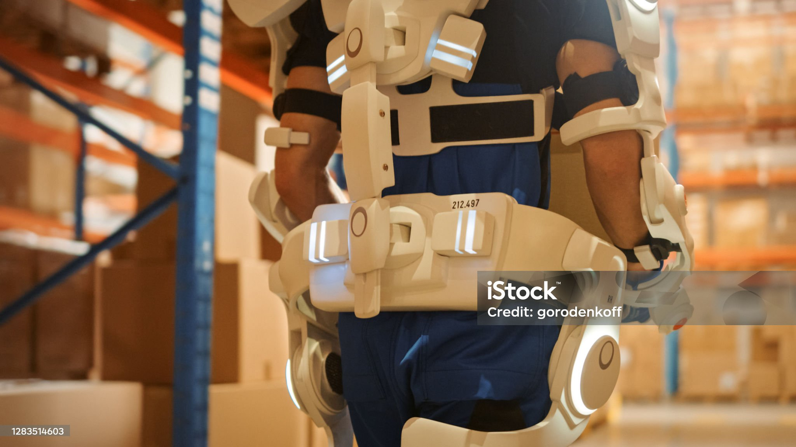
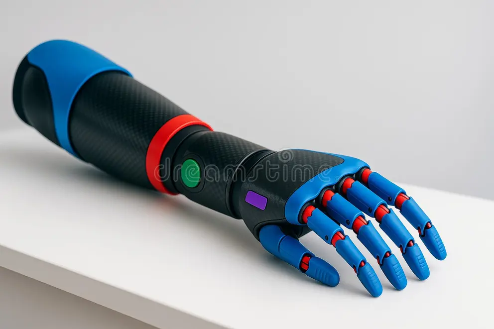
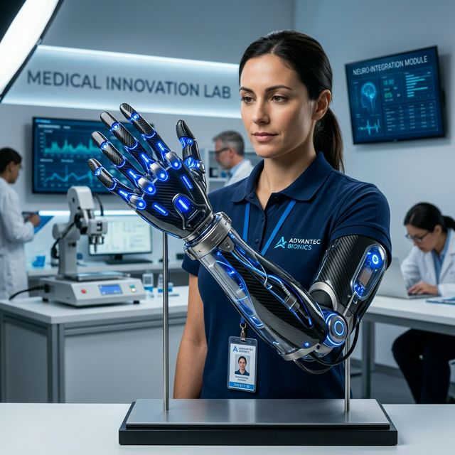
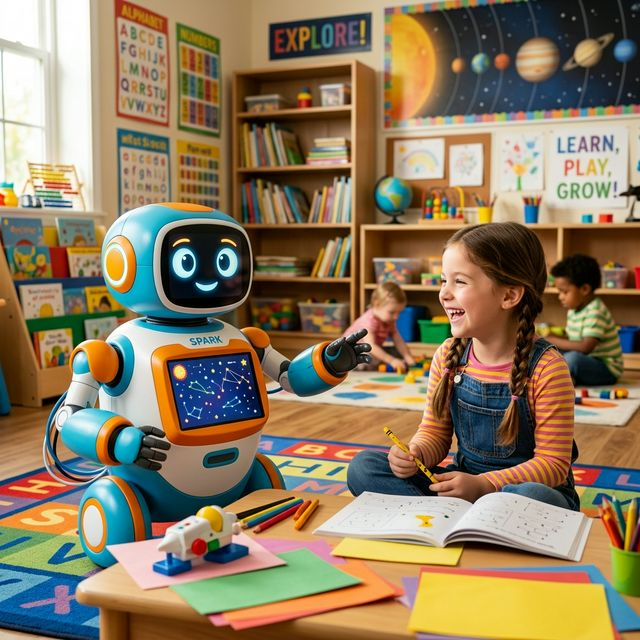

휴림로봇.
New Era of Robotics.
가상과 현실을 잇는 고정밀 제어 알고리즘과 하드웨어의 혁신
우리는 로봇의 '육체적 지능'을 창조합니다.
신체의 경계를 넘어,
일상으로의 복귀
Human Centric
"상실이 아닌 새로운 시작으로,
당신의 멈춰진 걸음을 다시 움직입니다."
몸의 불편함이 삶의 한계가 되지 않도록,
가장 든든한 신체가 되어 드립니다.
01. 따뜻한 기술 (Humanity)
다시 잡는 손, 다시 딛는 발걸음. 당신의 평범한 일상을 기술로 완성하며 삶의 자유를 다시 선물합니다.
02. 독보적 전문성 (Technical)
인간의 의지와 정밀 공학의 만남. 생체 신호와 로봇 기술을 융합하여 완벽한 거동의 자유를 실현합니다.
03. 새로운 정의 (Innovation)
한계를 뛰어넘는 메카트로닉스 기술로 신체의 기능을 재정의하고, 기술로 세상을 잇는 힘이 됩니다.
자유
한계 없는 삶
연결
일상으로의 복귀
하체 근력 보조 슈트
보행이 어려운 장기 부상자나 노약자의 보행을 돕는 하체 외골격 로봇입니다. 지면을 딛는 힘을 정밀하게 보조합니다.

웨어러블 허리 보조 로봇
무거운 짐을 들거나 고된 작업 환경에서 허리의 하중을 분산시켜 부상을 방지하고 작업 효율을 극대화하는 외골격 솔루션입니다.

인공지능 생체 의수 (Bionic Arm)
사람의 근전도 신호를 실시간으로 읽어 실제 손처럼 정교하고 부드러운 움직임을 재현하는 차세대 바이오닉 암 솔루션입니다.

로봇 AI & 바이오닉스
사람을 향하는 첨단 지능형 로봇 AI 기술과 신체 보조를 위한 바이오닉스 솔루션으로 로봇 융합 시대를 선도합니다.

첨단 신체 대체 로봇을 구성하는
4대 핵심 시스템

신경-기계 인터페이스
뇌와 근육의 미세한 신호를 로봇의 움직임으로 변환하는 초정밀 센서 인터페이스 시스템입니다.

바이오닉 구동 모듈
인간의 근육 작용을 모사하여 조용하고 부드러우면서도 강력한 힘을 내는 소형 고출력 모터 및 구동 장치입니다.

지능형 모션 제어 알고리즘
실시간 데이터를 분석하여 지형의 변화를 감지하고 균형을 유지하는 AI 기반의 동적 제어 시스템입니다.
인체공학적 경량 프레임
장시간 착용에도 무리가 없도록 탄소 섬유 등 첨단 소재를 활용한 초경량·고강도 바디 설계 기술입니다.
신뢰를 더하는 부품 및 지원 제품

고감도 신경 전극 키트
생체 신호를 노이즈 없이 포착하여 로봇에 전달하는 의료 등급 전극 패키지입니다.

재활 분석 소프트웨어
보행 패턴과 근육의 발달 상태를 정밀하게 분석하여 데이터 기반의 재활 컨설팅을 제공합니다.

스마트 충전 스테이션
웨어러블 기기의 빠른 충전과 동시에 시스템의 상태를 실시간 점검하는 전용 도킹 시스템입니다.
커뮤니티
글쓰기
기술 문의 및 소통을 환영합니다.
환영합니다! Firebase로 구동되는 실시간 커뮤니티 게시판입니다. 자유롭게 의견을 남겨주세요.